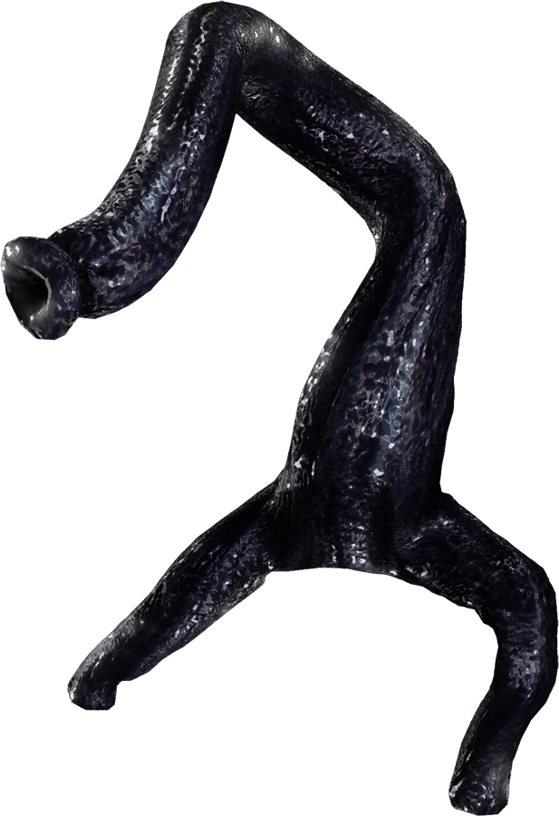
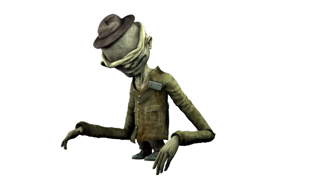
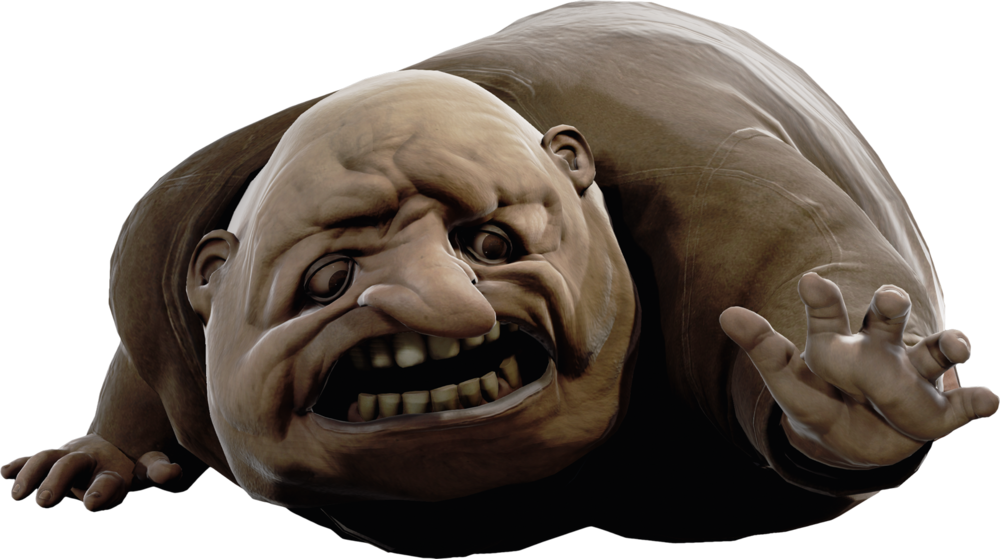

A protagonista do jogo. É uma garota de 9 anos vestida com um impermeável amarelo que tenta escapar da bizarra e aterradora embarcação chamada The Maw (A Bocarra). À medida que avança, lida com episódios intensos de fome e revela uma natureza de sobrevivência cada vez mais sombria.

Criaturas escuras e vermiformes que habitam as áreas húmidas e subterrâneas da embarcação. Atacam ao cair em cima dos intrusos para lhes sugar a vida.

O Zelador (Roger) é o primeiro vilão de Little Nightmares, caracterizado por ser completamente cego, possuir braços extraordinariamente longos e guiar-se apenas pela audição para capturar crianças e manter a ordem nas profundezas de The Maw, acabando por ter os braços decepados por uma porta de ferro pesada que Six solta sobre ele durante a fuga.

Responsáveis pela cozinha da embarcação. São figuras grotescas e obesas que usam peles/máscaras no rosto e preparam os pratos servidos aos clientes, perseguindo a Six violentamente assim que a detetam na cozinha.

A governante misteriosa e elegante de The Maw. Veste um kimono longo e usa uma máscara de porcelana para esconder o seu rosto, sendo movida por uma vaidade obsessiva e possuindo poderes mágicos sombrios.

Pequenas criaturas tímidas e misteriosas que usam chapéus altos e pontiagudos em forma de cone. Escondem-se nos cantos de The Maw e são inofensivos, podendo ser abraçados por Six.
